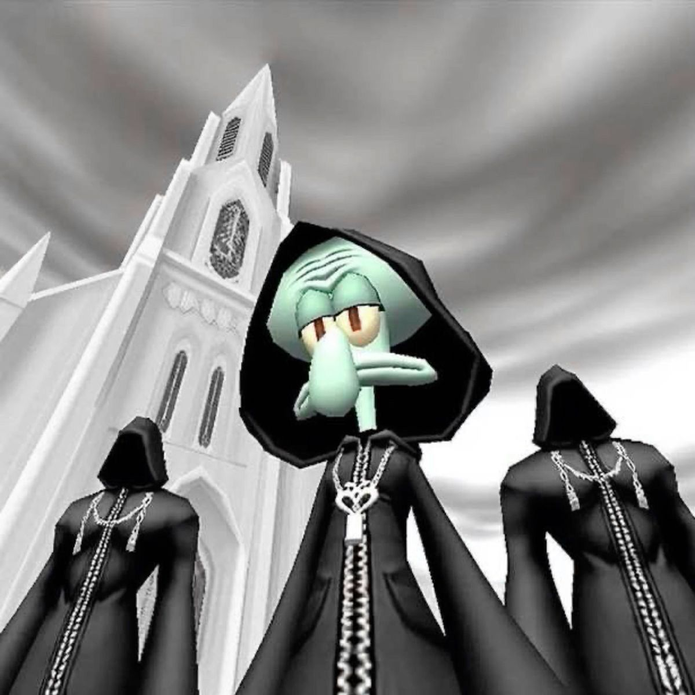
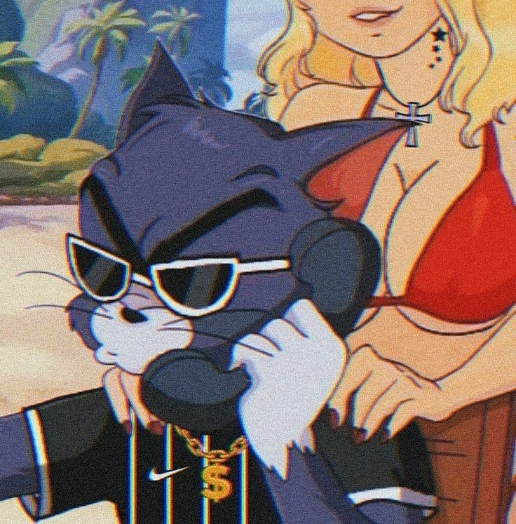
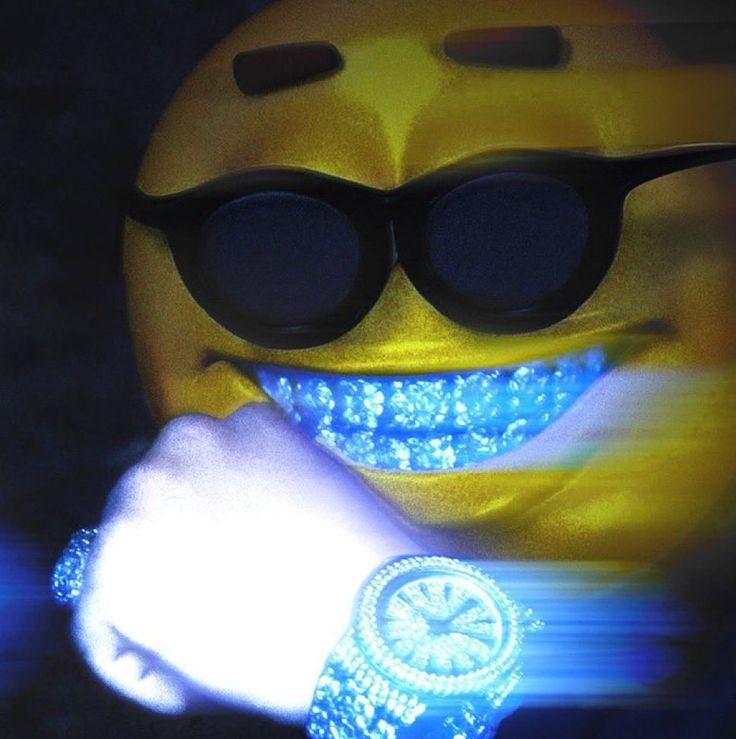
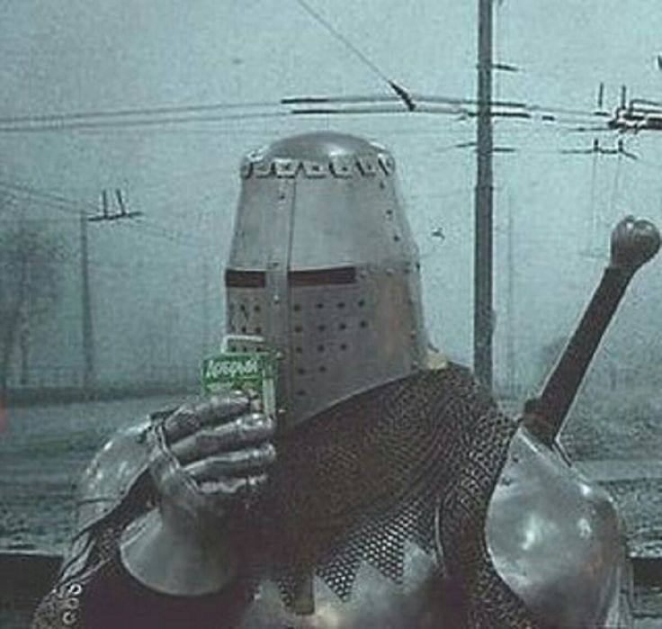
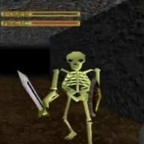
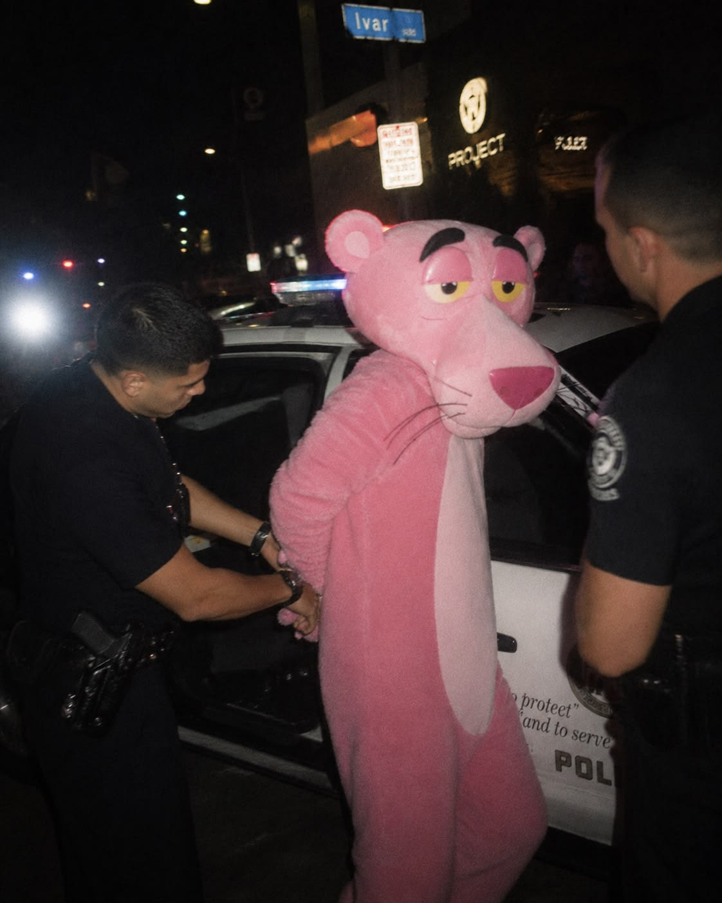

4K // 60 FPSNEO_MOTION // DYNAMIC EDITS
Плотный динамичный видеомонтаж, агрессивный саунд-дизайн и выверенный ритм склеек. Видеоряд, удерживающий внимание с первой секунды.



4K // 60 FPSПлотный динамичный видеомонтаж, агрессивный саунд-дизайн и выверенный ритм склеек. Видеоряд, удерживающий внимание с первой секунды.

ACTIVE // SCALEКомплексная упаковка и ведение медиа-каналов: визуальный код, контент-стратегия, вовлекающий копирайтинг и рост аудитории без скуки.

STABLE // v2.0Кастомные скрипты на Python для автоматизации рутины: парсинг контента, мониторинг источников и Telegram-боты для автоматической публикации.

FEATURED // 2026Фирменный графический дизайн, обложки треков, мерч, постеры и брендинг в узнаваемой ретро-кибер и пост-ироничной эстетике.